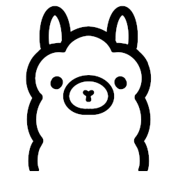
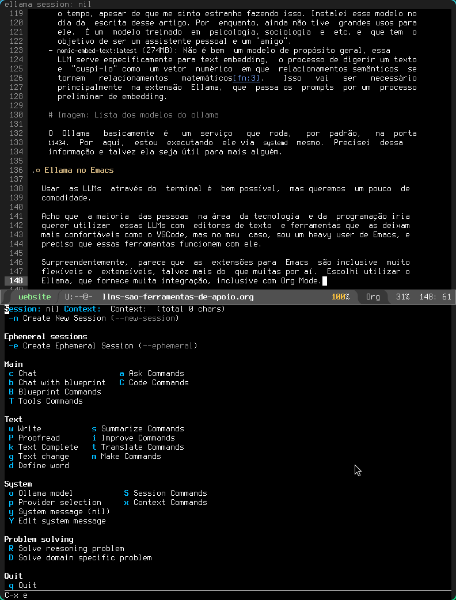
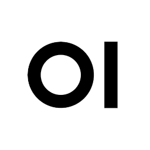
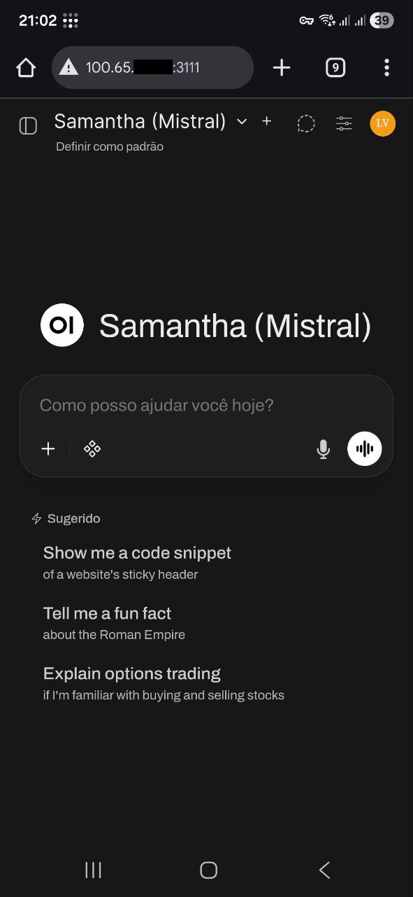

Os textos que escrevo por aqui em geral são pouco opinativos, e por isso acredito que não transparece muito a visão um pouco pessimista que tenho sobre tecnologia. E é claro, isso se estenderia para o assunto da moda: a ascensão das IAs, o termo guarda-chuva que utilizam para designar os grandes modelos de linguagem (LLMs) que se tornaram ferramentas marketeadas com uma gigantesca economia por trás delas.
Não adianta fugir. Tem muito dinheiro rolando, e vão tentar enfiar esse negócio goela abaixo em você.
Sou uma pessoa totalmente do contra e que detesta marketing excessivo, mas resolvi parar de nadar demais contra a corrente para não sofrer muito. Só que também decidi uma coisa: só iria na onda dessas novidades se fosse do meu jeito.
Eu acredito que é responsabilidade das pessoas mais versadas em tecnologia que elas compreendam e não fiquem reféns das soluções de mercado. Por isso, compreensão e uma análise educada são coisas extremamente importantes para mim, e era chegada a hora de eu praticar o que acredito para o assunto das LLMs, ou eu iria me tornar mais um programador ranzinza que acha que precisa que fazer tudo em C e Lisp (apesar de que sou exatamente assim).
Meu lema é: "Por que facilitar se posso complicar?". E aplicando isso, resolvi aproveitar meu computador novo, com uma GPU novinha, para executar alguns modelos de linguagem localmente, em vez de gastar rios de dinheiro com as soluções pagas do mercado. Eis aqui os passos que segui para essa façanha.
Antes de mais nada…
Eu queria inicialmente que esse artigo fosse mais extenso, mas vou me ater apenas a explicar o meu setup local para uso de LLMs. Meus casos de uso são principalmente questão de pesquisa, e em geral uso-as no trabalho para geração de pequeníssimos blocos de código (quando trata-se de boilerplate que faço todo dia e que não demanda raciocínio ou regra de negócio), ou para um tira-dúvidas geral de Python e/ou Django, SQL, e afins.
Aliás, até para ajustar um pouco a exportação desse artigo, estive consultando-as, então Emacs Lisp também entra nos casos de uso.
Eu tenho críticas e elogios a fazer ao uso das LLMs, mas vou fazer isso em um outro artigo futuro, inclusive usando alguns casos de exemplo que acredito serem interessantes.
Ferramentas que utilizei
Não vou entrar em muitos detalhes aqui a respeito de hardware, até porque esse não é muito o meu forte. Mas recentemente adquiri um "laptop gamer", um Dell G15. E como não queria passar muita raiva com drivers da NVIDIA, simplesmente desabilitei os gráficos integrados e estou usando a GPU diretamente para absolutamente tudo que for exigido. Meu sistema operacional é Arch Linux1, e tenho vivido bem, sem um sistema que quebra toda hora, ao contrário do que dizem as más-línguas2.
Em termos de software e serviços, o que utilizei foi:
- Ollama, para baixar e gerenciar modelos;
- Emacs, com a extensão Ellama, como principal meio de utilização dos modelos;
- Open WebUI (via Docker) para interface web e mobile de uso dos modelos;
- Tailscale para tunelamento entre dispositivos;
- UFW para facilitar a configuração de firewall.
Ollama

Figura 1: Logomarca da Ollama.
Tudo começa com uma aplicação que seja capaz de executar LLMs localmente. Existem várias aplicações e serviços que fazem isso. Resolvi utilizar Ollama por pura conveniência, mas fui agraciado com um bom suporte a ele também.
A configuração do Ollama no Arch Linux é extremamente simples, basta utilizar um script de instalação que eles mesmos fornecem.
Você pode ver o script aqui. Estou evitando escrevê-lo diretamente para evitar ataques ou qualquer coisa que o valha, através de substituição de texto.
Modelos
O Ollama não faz nada sozinho, é necessário que você baixe alguns modelos para fazer alguma coisa. E aqui entra o pulo do gato: os modelos variam em termos de tamanho e em termos de uso de hardware e processamento.
Depois de um pouco de curadoria, separei alguns modelos que mantenho sempre
atualizados por aqui. O processo de download ou atualização pode ser feito
através do comando ollama pull <modelo>, ou, se você quiser um chat diretamente
no terminal, você poderá usar ollama run <modelo>, que baixará e executará o
modelo.
Você vai ver também que esses modelos têm uma espécie de sistema de taggeamento parecido com imagens para Docker. Para encontrar modelos, veja a biblioteca de modelos no mesmo site do Ollama.
Estes são os modelos que estou utilizando, com seus respectivos tamanhos:
llama3.1:latest(4.9GB): O modelo Llama, da Meta. Útil para interações rápidas e usos de propósito geral (como por exemplo, gerar títulos para os meus chats com outras LLMs…). Em geral, é o meu fallback, caso algum modelo específico falhe.devstral-small-2:latest(15GB): O modelo que uso para trabalho com programação, geração de código, e também dúvidas técnicas a respeito de qualquer coisa. É praticamente meu Google offline. A grande maioria das minhas dúvidas são técnicas, então é o que mais uso, apesar de ser um pouquinho lento com relação ao resto.deepseek-r1:32b(19GB): Modelo de "pensamento" que uso para resumos e outras coisas. Estou fazendo experimentos com ele principalmente ao retirar informações de PDFs através da aplicação Tesseract. É o único modelo de "raciocínio" que tenho aqui; ele sempre emite o texto de "thinking" antes de qualquer interação, então tende a ser muuuuuuito lento. Estou usando exclusivamente a versão com 32 bilhões de parâmetros, que me pareceu ter um tamanho razoável.brunoconterato/Gemma-3-Gaia-PT-BR-4b-it:f16(7.8GB): O modelo que uso quando preciso de algo que envolva especificamente o uso de Português. Sinceramente estou considerando removê-lo, mas ele é melhor do que outros modelos que já testei. Basicamente é o Gemma 3, só que voltado para o Português. Eu diria que ele sabe mais de gramática do que qualquer outra coisa……samantha-mistral:latest(4.1GB): É um excelente modelo para conversar e passar o tempo, apesar de que me sinto estranho fazendo isso. Instalei esse modelo no dia da escrita desse artigo. Por enquanto, ainda não tive grandes usos para ele. É um modelo treinado em psicologia, sociologia e etc, e que tem o objetivo de ser um assistente pessoal e um "amigo".nomic-embed-text:latest(274MB): Não é bem um modelo de propósito geral, essa LLM serve especificamente para text embedding, o processo de digerir um texto e "cuspi-lo" como um vetor numérico em que relacionamentos semânticos se tornem relacionamentos matemáticos3. Isso vai ser necessário principalmente na extensão Ellama, que passa os prompts por um processo preliminar de embedding.

Figura 2: Lista de modelos locais no meu Ollama.
O Ollama basicamente é um serviço que roda, por padrão, na porta
11434. Por aqui, estou executando ele via systemd mesmo. Precisei dessa
informação e talvez ela seja útil para mais alguém.
Ellama, extensão para Emacs

Figura 3: Logomarca do Emacs.
Usar as LLMs através do terminal é bem possível, mas queremos um pouco de comodidade.
Acho que a maioria das pessoas na área da tecnologia e da programação iria querer utilizar essas LLMs com editores de texto e ferramentas que as deixam mais confortáveis como o VSCode, mas no meu caso, sou um heavy user de Emacs, e preciso que essas ferramentas funcionem com ele.
Surpreendentemente, parece que as extensões para Emacs são inclusive muito flexíveis e extensíveis, talvez mais do que muitas por aí. Escolhi utilizar o Ellama, que fornece muita integração, inclusive com Org Mode.

Figura 4: Menu do Ellama enquanto edito este mesmo post, no Emacs.
Configuração do Ellama
A configuração do Ellama é totalmente em Emacs Lisp, e compartilho ela abaixo para referência. Na sequência, vou discutir algumas características importantes.
(use-package ellama :init (setopt ellama-keymap-prefix "C-x E") (global-set-key (kbd "C-x e") 'ellama) (setopt ellama-language "Portuguese") (setopt ellama-auto-scroll t) (require 'llm-ollama) (setopt ellama-naming-scheme 'ellama-generate-name-by-llm) (setopt ellama-provider (make-llm-ollama :chat-model "devstral-small-2" :embedding-model "nomic-embed-text")) (setopt ellama-translation-provider (make-llm-ollama :chat-model "deepseek-r1:32b" :embedding-model "nomic-embed-text")) (setopt ellama-naming-provider (make-llm-ollama :chat-model "llama3.1:latest" :embedding-model "nomic-embed-text")) (setopt ellama-summarization-provider (make-llm-ollama :chat-model "deepseek-r1:32b" :embedding-model "nomic-embed-text")) (setopt ellama-coding-provider (make-llm-ollama :chat-model "devstral-small-2" :embedding-model "nomic-embed-text")) (setopt ellama-chat-display-action-function #'display-buffer-full-frame) (setopt ellama-instant-display-action-function #'display-buffer-at-bottom) (ellama-context-header-line-global-mode +1) (ellama-session-header-line-global-mode +1) (advice-add 'pixel-scroll-precision :before #'ellama-disable-scroll) (advice-add 'end-of-buffer :after #'ellama-enable-scroll))
Essa configuração instala o Ellama e define o seguinte:
- Prefixo do keymap: O atalho
Ctrl+x, E. Possibilita que eu escolha alguma das opções do Ellama pela combinação de letras de atalho, caso eu as tenha memorizado. Ainda não uso tanto assim. - Atalho global do submenu:
Ctrl+x, e. Abre o submenu que pode ser visto na figura logo acima, com as várias opções ao dispor. - Linguagem padrão definida como Português. Aparentemente o Ellama injeta prompts para ajudar com isso em determinadas situações, mas não os tentei modificar, nem nada disso.
- Auto-scroll: Enquanto houver geração de texto, a extensão rola o buffer de saída para baixo, para que o cursor e a visão do usuário sempre acompanhe a saída.
- Esquema de nomes dos buffers: Em toda situação que abrir um buffer de resposta, o nome do buffer será gerado através de uma LLM auxiliar que fará uma análise do texto pra isso.
- Outras configurações como mostra do nome do buffer da sessão no topo do Emacs, bem como arquivos que tenham sido injetados como contexto para os prompts.
Também são definidos modelos que são "provedores" para certos tipos de ações:
- Provedor geral e fallback:
devstral-small-2(Usado no chat geral e quando não houver modelo definido para alguma das outras tarefas). - Provedor de tradução de textos:
deepseek-r1:32b(mas também já utilizei o Gemma 3 e o Llama 3.1 para isso, depende do meu humor no dia). - Provedor de nomeação:
llama3.1:latest(para dar nomes aos buffers em que os chats ocorrerão). - Provedor de resumos:
deepseek-r1:32b(cria resumos, realiza um "thinking" mais pesado, enfim, esse é o modelo que estou usando para leitura e resumo de textos mais densos). - Provedor de código:
devstral-small-2(acho que não preciso explicar).
Uma coisa interessante do Ellama é que ele faz MUITA coisa, mas vou deixar para mostrar algumas depois.
Open WebUI

Figura 5: Logomarca do Open WebUI.
Outra coisa legal de se ter, também, é uma interface gráfica para interagir com os modelos. Eu acabei optando por usar o Open WebUI, que aparentemente é extensível a ponto de tolerar mais ferramentas caso você queira partir para coisas como geração de imagens, por exemplo. Mas como não é meu objetivo, realizei um deploy mais simples.
Isso talvez soe um pouco invasivo, mas o Open WebUI é melhor executado através de Docker4. Isso é um pouco chato pensando do ponto de vista de que estou servindo uma aplicação no meu próprio computador só para ter uma interface gráfica, mas depois de resmungar um pouco, eu só aceitei, mesmo.

Figura 6: Interface do Open WebUI no Google Chrome do Linux.
O único ponto de atenção aqui é que o Open WebUI deve conseguir acessar… advinhe só… o seu Ollama. Existe inclusive uma versão do contêiner já com o Ollama embutido, caso você queira algo mais unificado, e não vá depender do Ollama para outros serviços (o que não é meu caso, já que estou acessando também via Emacs).
Esse ponto não é um grande problema caso você esteja usando Docker Desktop no Windows5, porque ele já exporta um host customizado para que o contêiner tenha acesso às portas do seu computador.
No caso do Linux, você precisa adicionar esse host manualmente6.
Uma das formas de rodar o contêiner é através da linha de comando, usando o Docker "puro". O comando a seguir vai executar o Open WebUI com uma configuração para sempre reiniciar o contêiner caso ele seja encerrado (inclusive se você reiniciar o computador), a não ser que você destrua o contêiner:
docker run -d \ -p 3111:8080 \ --add-host=host.docker.internal:host-gateway \ -v open-webui:/app/backend/data \ --name open-webui \ --restart always \ ghcr.io/open-webui/open-webui:main
O comando acima "quebra um galho", mas eu achei particularmente ruim para
substituir o contêiner em caso de atualização, porque eu precisaria dar docker
pull na imagem novamente, e precisaria ficar copiando e colando o comando
acima. Então acabei montando um docker-compose.yml para me ajudar com isso:
services:
open-webui:
image: ghcr.io/open-webui/open-webui:main
container_name: open-webui
restart: always
environment:
PORT: "3111"
extra_hosts:
- "host.docker.internal:host-gateway"
volumes:
- open-webui:/app/backend/data
network_mode: host
volumes:
open-webui:
external: true
Veja que eu marquei o volume open-webui com external: true unicamente porque eu
já havia executado a ferramenta com Docker "puro", e queria manter meu volume
que já estava com várias configurações. Caso você esteja executando diretamente
no Docker Compose, pode remover isso sem problemas.
Veja também que eu estou rodando o contêiner em network_mode: host. Isso
significa que ele basicamente não passa pelo processo de mapeamento da porta
padrão da aplicação para o computador, e caso eu tivesse mais contêineres, eles
não estariam em uma única malha capaz de fazer com que eles comuniquem entre si.
Em vez disso, eu estou configurando a aplicação diretamente (através da variável
de ambiente PORT) para rodar na porta 3111. Esse detalhe do modo de networking
do contêiner pode ser importante, caso você precise alterar esse arquivo do
Docker Compose.
Depois de toda essa configuração, eu tenho o Open WebUI rodando no meu
computador na porta 3111, e tudo o que preciso fazer é ir até o diretório da
configuração e executar um docker compose up -d. Se eu precisar atualizar…
docker compose down, docker pull na imagem, docker image prune para remover o
lixo (ou deletar direto via lazydocker7), e subir o serviço de novo. Já
está com o restart: always, então se eu reiniciar o computador, nem preciso me
preocupar.
Acesso remoto com Tailscale

Figura 7: Logomarca do Tailscale
Tudo funcionou muito bem, mas agora estamos em um ponto crítico: Tudo isso só
funciona no meu computador. E se você for como eu, muito provavelmente você tem
um firewall bem-configurado no seu computador que não esteja permitindo, no
momento, acesso externo a nenhuma porta sua. Espera… Não?! Então vamos
instalar o ufw primeiro.
O Uncomplicated Firewall (UFW) é uma camada em cima do iptables que garante
certa simplicidade ao configurar regras de firewall. Por padrão, ele não permite
nenhuma entrada, em nenhuma porta.
Depois de instalar o ufw na sua distribuição Linux, ative-o através do systemd,
caso você também use esse sistema de inicialização.
sudo systemctl enable ufw sudo systemctl start ufw
Para o meu caso de uso, eu me concentrei em dois acessos externos no meu computador. O primeiro seria o acesso ao Open WebUI pelo menos no meu celular, mas desejavelmente no meu laptop de trabalho também; o segundo seria o acesso ao Ollama (via Emacs e Ellama também), diretamente através do meu laptop de trabalho, um sistema com Ubuntu, que eu potencialmente levaria para fora da minha casa.
Esse é o caso para alguma aplicação que permita o tunelamento entre vários dispositivos. Por sorte, existe uma solução muito legal pra isso: o Tailscale8, que eu já uso desde que surgiu, inclusive para experimentos envolvendo Kubernetes, e que agora eu posso usar para garantir a comunicação segura entre os três dispositivos.
A princípio, bastou seguir os passos de instalação para Android e para os dois Linux, como orientado no site oficial, e fazer login na minha rede privada e pessoal.
Uma vez na rede, do ponto de vista do meu computador, pude executar o seguinte
comando e obter saídas como essas (navi é o meu laptop executando o Ollama e o
Open WebUI):
➜ ~ tailscale status 100.65.xx.xx navi luksamuk@ linux - 100.117.xx.xx <pc-de-trabalho> luksamuk@ linux offline, last seen 6h ago 100.82.xx.xx <celular> luksamuk@ android idle, tx 5374104 rx 948116
Para garantir uma boa segurança, criei as seguintes regras no UFW:
- Meu computador de trabalho deve ser capaz de se conectar às portas
11434e3111, porque quero acessar tanto o Open WebUI, quanto acessar diretamente o Ollama através do Emacs9. - Meu celular deve ser capaz de se conectar apenas à porta
3111, porque ele será capaz de acessar apenas a Open WebUI.
Só precisamos traduzir essas duas ideias em três simples comandos de configuração do UFW. No caso, especifico os IPs dos dispositivos para garantir que eles só consigam acessar meu computador através da rede Tailscale (essa configuração não é exaustiva porque eu poderia usar a interface de rede da aplicação, mas é suficiente).
sudo ufw allow from 100.117.xx.xx to any port 11434 proto tcp sudo ufw allow from 100.82.xx.xx to any port 3111 proto tcp sudo ufw allow from 100.117.xx.xx to any port 3111 proto tcp
Para checar se deu tudo certo10:
➜ ~ sudo ufw status numbered
Status: active
To Action From
-- ------ ----
[ 1] 11434/tcp ALLOW IN 100.117.xx.xx
[ 2] 3111/tcp ALLOW IN 100.82.xx.xx
[ 3] 3111/tcp ALLOW IN 100.117.xx.xx

Figura 8: Interface do Open WebUI no Google Chrome do Android.
Script de interação no terminal
Uma última coisa: às vezes, quando estou usando o terminal do Linux, eu esqueço algumas coisas bobas e, antes, eu precisava ir até o Google e pesquisar. O que comecei a me dar conta é que, tendo modelos ao alcance dos meus dedos com um comando, eu poderia inclusive criar um script para facilitar esse tipo de coisa. E que inclusive, esse script funcionaria também offline.
Então eu criei um script chamado ask-ai que eu poderia invocar via linha de
comando. E como meu caso de uso principal é desenvolvimento, linha de comando, e
problemas similares, eu resolvi colocar o devstral-small-2 como modelo padrão
utilizado.
#!/bin/bash MODEL="devstral-small-2" BLUEPRINT="Seja extremamente sucinto, quero ver só código, exceto quando for necessário usar uma resposta discursiva, ou se eu pedir. Se você puder me responder só mostrando código mesmo quando parecer que eu quero uma resposta discursiva, faça isso. Não termine suas respostas com perguntas, esta é uma sessão efêmera de pergunta única, eu não vou conseguir te responder." if [[ -z "$*" ]]; then echo "Erro: Nenhum argumento fornecido" >&2 exit 1 fi exec ollama run "$MODEL" "$(printf "%s\n\n%s" "$*" "$BLUEPRINT")" | glow
Eu escrevi o script em si do zero e só pedi para o Ellama melhorar para que eu
não necessariamente precisasse colocar os argumentos entre parênteses (a não ser
quando eu estiver usando comandos). A saída é roteada para o programa
Glow11, que dá uma visualização bonita para Markdown no terminal, mas ao
mesmo tempo não mostra nada enquanto a resposta estiver sendo gerada, então o
prompt da variável BLUEPRINT é importante para garantir respostas muito
sucintas.

Figura 9: Exemplo de uso do script ask-ai. Repare o uso do comando time para mostrar o tempo que levou.
Conclusão
Esse foi o guia prático do que fiz, mas ainda não explorei com vocês os resultados que tive com todo esse processo. Faz menos de uma semana que comecei a usar essa configuração até mesmo para programar no trabalho, mas certamente já tenho algumas opiniões a respeito de como tudo isso funciona.
Você vai observar também que não fiz menção ao uso de nenhuma solução paga ainda. Não é que eu seja do contra, é que eu não sinto que seja o momento para eu gastar dinheiro com modelos de forma pessoal ainda, até porque não tenho casos de uso na minha "computação pessoal" que não estejam sendo resolvidos com modelos locais.
Como disse anteriormente, em breve vou fazer outro artigo, um pouco mais formal, apresentando alguns dos meus usos, o que eu esperava, e como escolhi os modelos que usei. Não quero dar grandes spoilers, mas posso adiantar desde já que LLMs são excelentes ferramentas de apoio, mas não são balas de prata, e certamente me parecem ter sua funcionalidade inflada por conta de todo o marketing, o que inclusive ofusca o quão úteis elas podem ser em determinadas situações.
Notas de Rodapé:
I use Arch btw.
Talvez porque uso Linux há uns treze anos e já me acostumei com a maioria dos problemas. Se o Xorg e o Wayland quebrarem, eu sei me virar.
Esse processo pode parecer complexo, mas não é tanto. Tem um artigo no HuggingFace muito legal explicando isso. Foi uma das primeiras coisas que vi no assunto das LLMs que me pareceu pouco trivial a ponto de despertar meu interesse. Curiosamente, os marketeiros de IA não vão te falar desse tipo de coisa… Talvez só os versados em machine learning, ciência de dados, cientistas envolvidos com processamento de linguagem natural… enfim, pessoas que têm mais interesse em estudo que em propaganda.
Vou me dar o luxo de não explicar o que é Docker e nem Docker Compose aqui, porque essas são ferramentas extremamente utilizadas na indústria, e se você for um programador trabalhando com web, já deve estar familiarizado com elas. Então não me leve a mal, caso você ainda não saiba o que é… corra atrás, o mais rápido possível.
Se você está usando Docker Desktop no Windows, você automaticamente está errado, e não quero argumentação contrária. Se você estiver rodando Linux dentro do WSL e instalar Docker "por dentro" dele, é um pouco melhor, mas você continua errado do mesmo jeito.
Preciso falar dos pressupostos de segurança que isso abre? Acho que não, né? Cuide bem das suas aplicações. Mais à frente vou falar um pouco de firewall para ajudar.
O Lazydocker é uma das melhores ferramenta CLI para Docker que já usei. Uso no trabalho e inclusive recomendo que todos usem também.
O Tailscale é um excelente serviço, tem um plano grátis com uma quantidade limitada de dispositivos caso você esteja fazendo uso pessoal, e sinceramente, se eu tivesse um uso maior, certamente estaria pagando um plano, porque é bom demais.
Veja que, em parte, isso abre o pressuposto para eu conseguir inclusive
instalar o ollama no computador de trabalho, sem rodar o serviço em si, e usar
uma variável de ambiente para se conectar ao meu computador e gerenciar modelos.
Mas isso não é um grande problema porque só eu tenho acesso a esse computador, e
se porventura perdesse o acesso, posso "chutá-lo" da minha rede pessoal.
Aqui eu usei a opção ufw status numbered para que você veja que as
regras sempre estão numeradas na ordem em que se apresentam. Se por acaso você
tiver regras a mais que queira remover, é só uma questão de usar um sudo ufw
delete <número>. Mas… saiba bem o que estiver fazendo aqui. Ok?
Glow é uma ferramenta de renderização de Markdown para terminal. Ela é construída com bibliotecas muito interessantes para Golang, que permitem construir aplicações TUI (Terminal User Interface). Ou seja… interfaces bonitinhas para terminal. Quem disse que ambientes de texto não podem ter uma interface com frufrus?